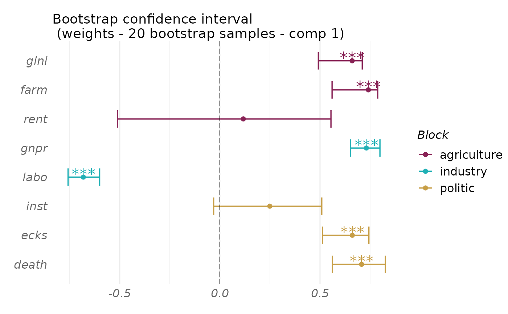

Bootstrap confidence intervals and p-values for evaluating the significance/stability of the block-weight vectors produced by S/RGCCA.
Usage
rgcca_bootstrap(
rgcca_res,
n_boot = 100,
n_cores = 1,
balanced = TRUE,
keep_all_variables = FALSE,
verbose = TRUE
)Arguments
- rgcca_res
A fitted RGCCA object (see
rgcca).- n_boot
The number of bootstrap samples (default: 100).
- n_cores
The number of cores used for parallelization.
- balanced
A logical value indicating if a balanced bootstrap procedure is performed or not (default is TRUE).
- keep_all_variables
A logical value indicating if all variables have to be kept even when some of them have null variance for at least one bootstrap sample (default is FALSE).
- verbose
A logical value indicating if the progress of the bootstrap procedure is reported.
Value
A bootstrap object that can be printed and plotted.
- n_boot
The number of bootstrap samples, returned for further use.
- rgcca
The RGCCA object fitted on the original data.
- bootstrap
A data.frame with the block weight vectors and loadings computed on each bootstrap sample.
- stats
A data.frame of statistics summarizing the bootstrap data.frame.
Examples
# Bootstrap confidence intervals and p-values for RGCCA
data(Russett)
blocks <- list(
agriculture = Russett[, seq(3)],
industry = Russett[, 4:5],
politic = Russett[, 6:8]
)
fit_rgcca <- rgcca(blocks, ncomp = 1)
boot_out <- rgcca_bootstrap(fit_rgcca, n_boot = 20, n_cores = 1)
#> Bootstrap samples sanity check...
#> OK
#>
| | 0 % ~calculating
|+++ | 5 % ~00s
|+++++ | 10% ~00s
|++++++++ | 15% ~00s
|++++++++++ | 20% ~00s
|+++++++++++++ | 25% ~00s
|+++++++++++++++ | 30% ~00s
|++++++++++++++++++ | 35% ~00s
|++++++++++++++++++++ | 40% ~00s
|+++++++++++++++++++++++ | 45% ~00s
|+++++++++++++++++++++++++ | 50% ~00s
|++++++++++++++++++++++++++++ | 55% ~00s
|++++++++++++++++++++++++++++++ | 60% ~00s
|+++++++++++++++++++++++++++++++++ | 65% ~00s
|+++++++++++++++++++++++++++++++++++ | 70% ~00s
|++++++++++++++++++++++++++++++++++++++ | 75% ~00s
|++++++++++++++++++++++++++++++++++++++++ | 80% ~00s
|+++++++++++++++++++++++++++++++++++++++++++ | 85% ~00s
|+++++++++++++++++++++++++++++++++++++++++++++ | 90% ~00s
|++++++++++++++++++++++++++++++++++++++++++++++++ | 95% ~00s
|++++++++++++++++++++++++++++++++++++++++++++++++++| 100% elapsed=00s
print(boot_out)
#> Call: method='rgcca', superblock=FALSE, scale=TRUE, scale_block='inertia',
#> init='svd', bias=TRUE, tol=1e-08, NA_method='na.ignore', ncomp=c(1,1,1),
#> response=NULL, comp_orth=TRUE
#> There are J = 3 blocks.
#> The design matrix is:
#> agriculture industry politic
#> agriculture 0 1 1
#> industry 1 0 1
#> politic 1 1 0
#>
#> The factorial scheme is used.
#>
#> Extracted statistics from 20 bootstrap samples.
#> Block-weight vectors for component 1:
#> estimate mean sd lower_bound upper_bound bootstrap_ratio pval
#> gini 0.661 0.638 0.0668 0.495 0.737 9.884 0.000
#> farm 0.742 0.729 0.0500 0.647 0.814 14.836 0.000
#> rent 0.117 0.103 0.2182 -0.376 0.416 0.537 0.250
#> gnpr 0.732 0.727 0.0524 0.646 0.819 13.974 0.000
#> labo -0.682 -0.682 0.0572 -0.763 -0.573 -11.918 0.000
#> inst 0.249 0.230 0.1933 -0.117 0.495 1.289 0.176
#> ecks 0.661 0.650 0.0550 0.538 0.723 12.011 0.000
#> death 0.708 0.695 0.0646 0.575 0.790 10.960 0.000
#> adjust.pval
#> gini 0.000
#> farm 0.000
#> rent 0.250
#> gnpr 0.000
#> labo 0.000
#> inst 0.202
#> ecks 0.000
#> death 0.000
plot(boot_out, type = "weight", block = 1:3, comp = 1,
display_order = FALSE)

if (FALSE) {
# Download the dataset's package at http://biodev.cea.fr/sgcca/ and install
# it from the package archive file.
# You can do it with the following R commands:
if (!("gliomaData" %in% rownames(installed.packages()))) {
destfile <- tempfile()
download.file(
"http://biodev.cea.fr/sgcca/gliomaData_0.4.tar.gz", destfile
)
install.packages(destfile, repos = NULL, type = "source")
}
data("ge_cgh_locIGR", package = "gliomaData")
blocks <- ge_cgh_locIGR$multiblocks
Loc <- factor(ge_cgh_locIGR$y)
levels(Loc) <- colnames(ge_cgh_locIGR$multiblocks$y)
blocks [[3]] <- Loc
fit_sgcca <- rgcca(blocks, response = 3,
sparsity = c(.071, .2, 1), ncomp = 1,
scheme = "factorial",
verbose = TRUE
)
print(fit_sgcca)
boot_out <- rgcca_bootstrap(fit_sgcca, n_boot = 50, n_cores = 2)
plot(boot_out, block = 1:2, type = "weight",
comp = 1, n_mark = 300000,
display_order = FALSE)
}